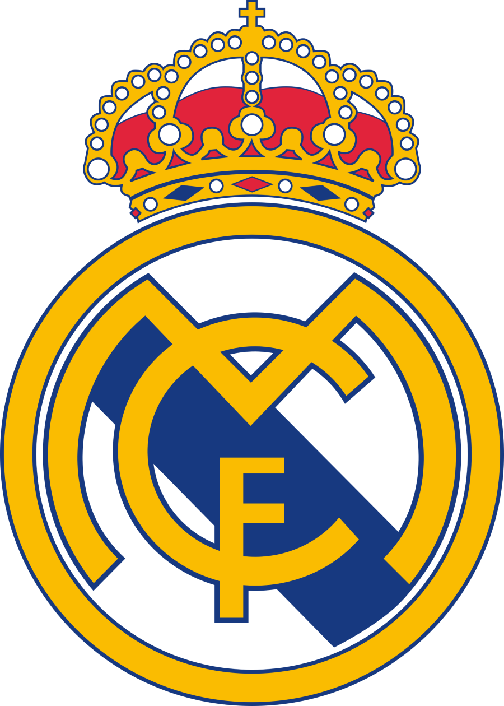

Real Madrid
Real Madrid Club de Fútbol, commonly referred to as Real Madrid, is a Spanish professional football club based in Madrid. The club competes in La Liga, the top tier of Spanish football. Founded in 1902 as Madrid Football Club, the club has traditionally worn a white home kit since its inception. The honorific title real is Spanish for "royal" and was bestowed to the club by King Alfonso XIII in 1920 together with the royal crown in the emblem. Real Madrid have played their home matches in the 83,186-capacity Santiago Bernabéu in downtown Madrid since 1947. Unlike most European sporting entities, Real Madrid's members (socios) have owned and operated the club throughout its history. The official Madrid anthem is the "Hala Madrid y nada más", written by RedOne and Manuel Jabois.[6] The club is one of the most widely supported in the world, and is the most followed football club on social media according to the CIES Football Observatory as of 2023[7][8] and was estimated to be worth $5.1 billion in 2022, making it the world's most valuable football club.[9] In 2023, it was the second highest-earning football club in the world, with an annual revenue of €713.8 million.[10]
